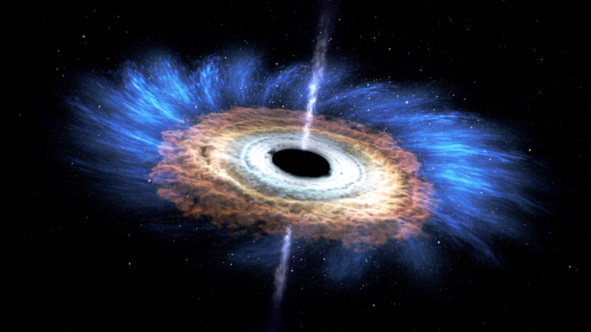
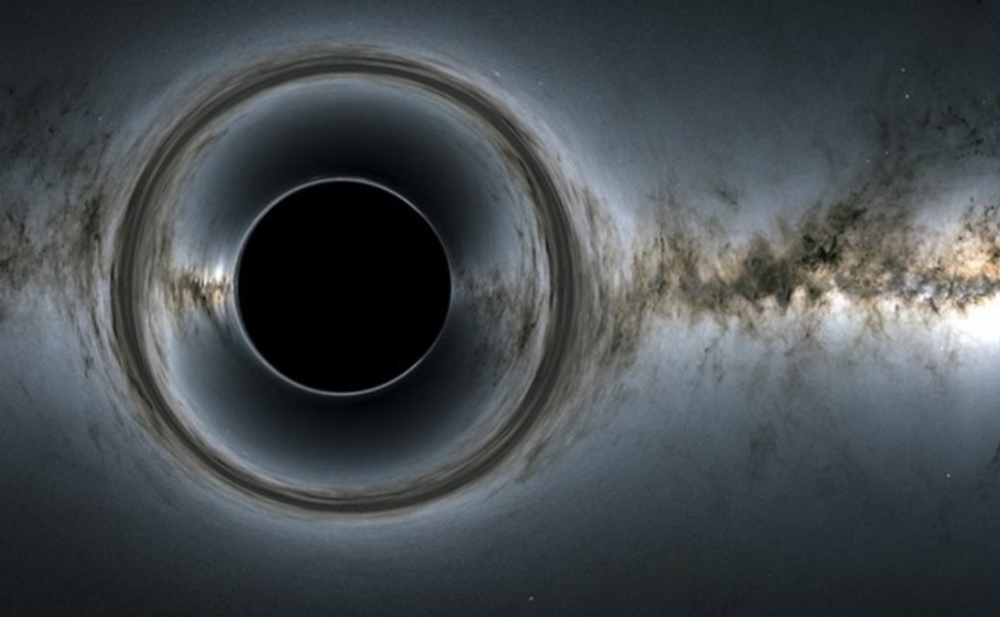

Hố Đen
Lỗ đen (hố đen hoặc hốc đen) là một vùng trong không-thời gian mà trường hấp dẫn ngăn cản mọi thứ, bao gồm cả ánh sáng cũng không thể thoát ra.
Thuyết tương đối rộng tiên đoán một lượng vật chất với khối lượng đủ lớn nằm trong phạm vi đủ nhỏ sẽ làm biến dạng không thời gian để trở thành lỗ đen. Xung quanh lỗ đen là một mặt xác định bởi phương trình toán học gọi là chân trời sự kiện, mà tại đó khi vật chất vượt qua nó sẽ không thể thoát ra ngoài lỗ đen được.
Lỗ đen gọi là "đen" bởi vì nó hấp thụ mọi bức xạ và vật chất hút qua chân trời sự kiện, giống như một vật đen tuyệt đối trong nhiệt động lực học; nó cũng không phải là một loại "lỗ" hay "hố" nào mà là vùng không thời gian không để cho một thứ gì thoát ra.

Mặc dù theo định nghĩa nó là vật thể đen hoàn toàn hay vô hình, sự tồn tại của lỗ đen có thể suy đoán thông qua tương tác của nó với môi trường vật chất xung quanh và bức xạ như ánh sáng. Vật chất rơi vào lỗ đen hình thành lên vùng bồi tụ, ở đây vật chất va chạm và ma sát với nhau, trở thành trạng thái plasma phát ra bức xạ cường độ lớn; khiến môi trường bao quanh lỗ đen trở thành một trong những vật thể sáng nhất trong vũ trụ.
Nếu có một ngôi sao quay quanh lỗ đen, hình dáng và chu kỳ quỹ đạo của nó cho phép các nhà thiên văn tính ra được khối lượng của lỗ đen và khoảng cách đến nó. Những dữ liệu này giúp họ phân biệt được thiên thể đặc là lỗ đen hay sao neutron... Theo cách này, nhiều lỗ đen được phát hiện ra nằm trong hệ sao đôi, và tại trung tâm Ngân Hà có một lỗ đen khổng lồ với khối lượng xấp xỉ 4,3 triệu lần khối lượng Mặt Trời.
Lý thuyết về lỗ đen, nơi có trường hấp dẫn mạnh tập trung trong vùng không thời gian nhỏ, là một trong số những lý thuyết cần sự tổng hợp của thuyết tương đối tổng quát miêu tả lực hấp dẫn với Mô hình chuẩn của cơ học lượng tử. Và hiện nay, các nhà lý thuyết vẫn đang trên con đường xây dựng thuyết hấp dẫn lượng tử để có thể miêu tả vùng kì dị tại trung tâm lỗ đen.
Hố đen Unicorn - Hố đen gần Trái Đất nhất
Phát hiện này được công bố ngày 21.4 trên trang Monthly Notices của Hiệp hội Thiên văn Hoàng gia. Các nhà nghiên cứu đặt tên cho hố đen này là Unicorn (Kỳ Lân) vì nó có một không hai và một phần vì nó được tìm thấy trong chòm sao Monoceros - The Unicorn.
Tác giả chính Tharindu Jayasinghe - tiến sĩ nghiên cứu về thiên văn học tại Đại học Bang Ohio - cho biết: “Khi chúng tôi xem xét dữ liệu thì hố đen Unicorn xuất hiện”.
Hố đen Unicorn có khối lượng gấp ba lần khối lượng mặt trời. Tuy thế, khối lượng này được cho là rất nhỏ so với các hố đen khác. Rất ít hố đen có khối lượng nhỏ như vậy được tìm thấy trong vũ trụ.
Hố đen Unicorn vẫn nằm trong dải Ngân Hà, cách Trái đất 1.500 năm ánh sáng. Nó đã bị che khuất khỏi tầm mắt cho đến khi tiến sĩ Jayasinghe bắt đầu phân tích về nó.
Xuất hiện cùng với ngôi sao đỏ khổng lồ, hố đen được kết nối với ngôi sao bằng lực hấp dẫn. Các nhà khoa học đã không thể nhìn thấy hố đen vì theo lý thuyết, hố đen rất tối không chỉ với mắt thường mà các công cụ đo ánh sáng và bước sóng cũng khó phát hiện ra.